"NOT FOR SALE"
Una colección de cosas que he hecho a lo largo del tiempo, hay muchas más por supuesto pero solo quiero reunir algunas aquí. Algunas no representan una complejidad especial pero si representan algo importante para mí, ya sea por el momento en el que lo hice o por el proceso. Los objetos están agrupados por año, y como dice el título de la sección, no están a la venta.
2024
9/09/2024
Una tulipa para la cocina. Parece que últimamente la cocina es el hogar de todas mis creaciones. Los días ya se van haciendo más cortos y en la cocina necesitábamos crear un espacio mejor iluminado. Se me ocurrió hacer esta tulipa con alambre, en este caso sacado de dos perchas de metal (una para la parte superior y otra para la inferior, enderezado y curvado), restos de loneta de algodón que tenía de otros proyectos y cable textil que compré hace no mucho el cual no pretendía usar para esto pero ya que lo tenía lo aproveché.
No tiene mucho misterio, es un rectángulo de tela cosido por cada lateral para contener el alambre y cerrado en forma de tubo. Para sujetarlo al cable y que mantuviese la forma de círculo usé alambre más fino, dos diámetros que se sujetan a unos pequeños hilos que cosí en la parte superior. Después esos alambres se sujetan al cable con una brida. Benditas bridas, always there to help. Algún día igual pienso en otra forma de sujetarla al cable. Inicialmente pensé en colgarla del techo y que la bombilla colgase también, luego pensé que mejor 2x1 y que el cable se encargase de ello.
Bastante contento con el resultado y eso que como me quedaba poca pintura (y no quería comprar más por lo de it being on a budget) solo le di un par de capas a las partes que iban a ser visibles de frente, de ahí que en la primera foto todavía haya partes blancas.

 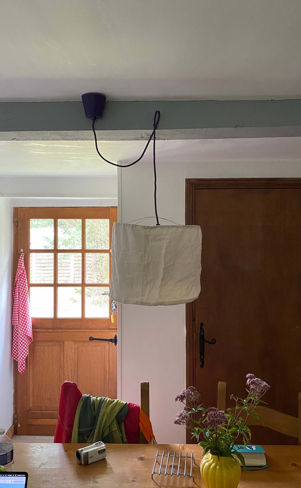
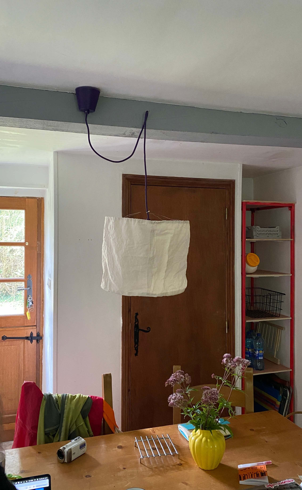
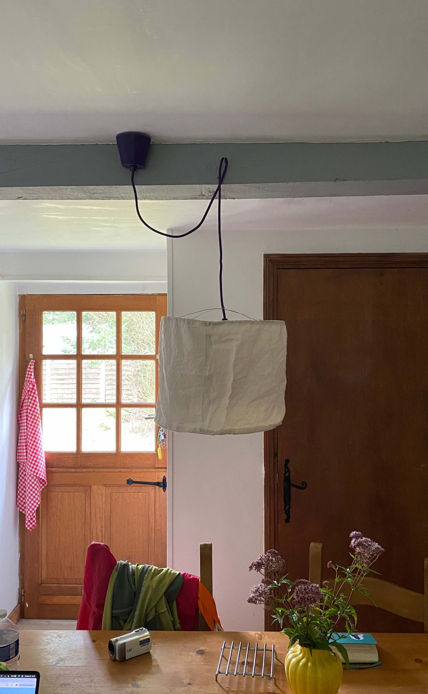
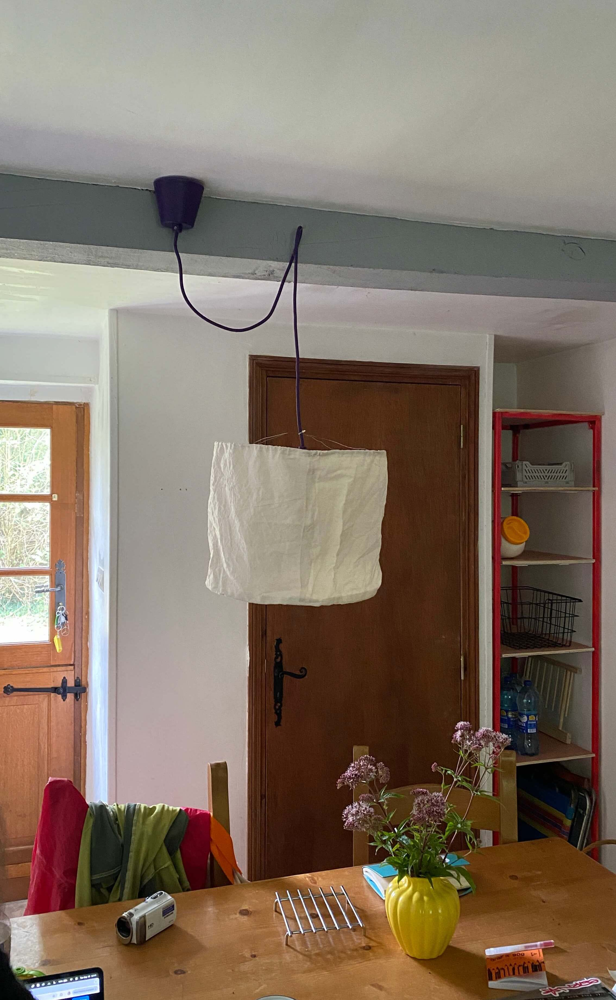
Picture la estantería al fondo a la derecha.
5/09/2024
Una estantería para un hueco que tenemos en la cocina. La verdad que ya era hora de hacer algo con ese hueco. Y también era hora de aprovechar algo del metal de la estantería de la que hablé el 12/07/2024.
Está hecho con perfiles cuadrados de hierro de 20 x 20 mm soldados, varilla roscada de 6 mm y contrachapado de 10 mm de espesor. Está hecha on a budget, no era mi plan gastar mucho dinero en hacerla, el contrachapado y la varilla roscada me costaron unos 10€. Como iba a ir encajonada la varilla roscada no lleva ningún tipo de tope ya que es imposible que se salga por los laterales, las paredes hacen de tope. Para que el contrachapado no se deslizase hacia delante (porque hacia atrás no puede por la pared de fondo) le pegué unos trozos del propio contrachapado en la parte inferior, que tocan contra la varilla.
Bastante contento con el resultado y eso que como me quedaba poca pintura (y no quería comprar más por lo de it being on a budget) solo le di un par de capas a las partes que iban a ser visibles de frente, de ahí que en la primera foto todavía haya partes blancas.


Y sí, otra capa de pintura no le vendría nada mal. Si alguna vez vuelvo a comprar rojo le daré. De momento, it does the job, que es para lo que la hice.
11/08/2024
Dos rejillas de ventilación con apertura ajustable, una más grande que la otra. Las voy a utilizar en la planta superior de la casa, por donde pasa el tubo de la chimenea (que actualmente se encuentra encerrado en un cubo de pladur) para conseguir aprovechar un poco del calor. Pretendo poner la rejilla grande en la zona inferior del cubo y la pequeña en la parte superior, de esta manera el aire entrará frío por abajo y saldrá caliente por arriba. Espero que el calor residual almacenado ahí adentro cuando tenemos la chimenea encendida abajo consiga aumentar un par de grados la temperatura arriba (la predicción puede sonar un poco exagerada pero sé que se almacena mucho calor ahí adentro).
En el interior de las rejillas pegaré un poco de malla fina para evitar que salga polvo del interior del cubo. Y por cierto, decidí hacerlas yo en vez de comprarlas cuando vi lo caras que eran en los brico shops de Francia, me negaba a pagar 18€ (cada una) por un trozo de chapa así que lo hice yo.
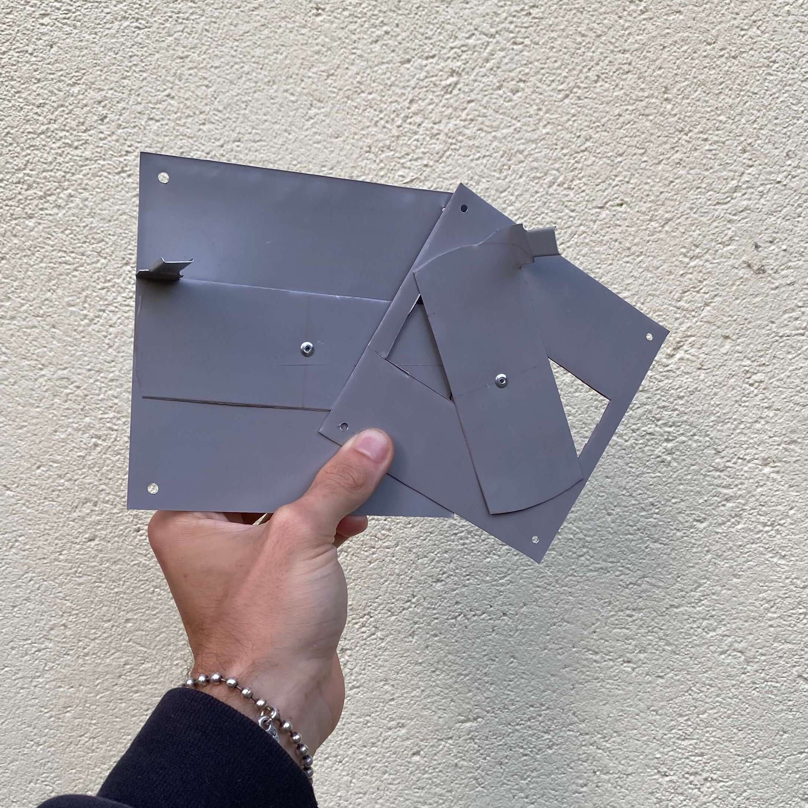 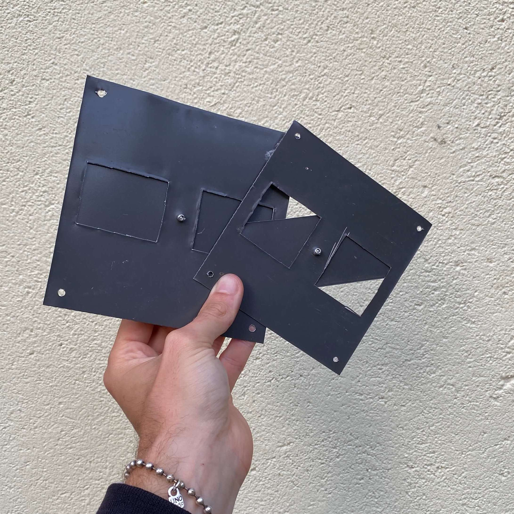28/07/2024
Hice este trípode desmontable para cocinar a la leña en el jardín. Está hecho de tres piezas iguales de chapa de acero de 1'5 mm de espesor. Hice varias hendiduras para que el hueco interior fuese ajustable a diferentes tipos de cazuelas o sartenes. Básicamente la idea vino de que quería hacerme un stove pequeño para exterior pero sabía que no lo iba a usar nunca así que para quitarme el gusanillo hice algo que sí sabía que iba a usar, y de hecho, es tremendamente útil. No pesa nada y tampoco ocupa nada de espacio una vez separadas las patas.
Sí, no le hice ninguna foto antes de usarlo, de ahí que esté "tan quemadete" jeje.
Las patas encajan alternando arriba-abajo para darle firmeza, y no se menea.
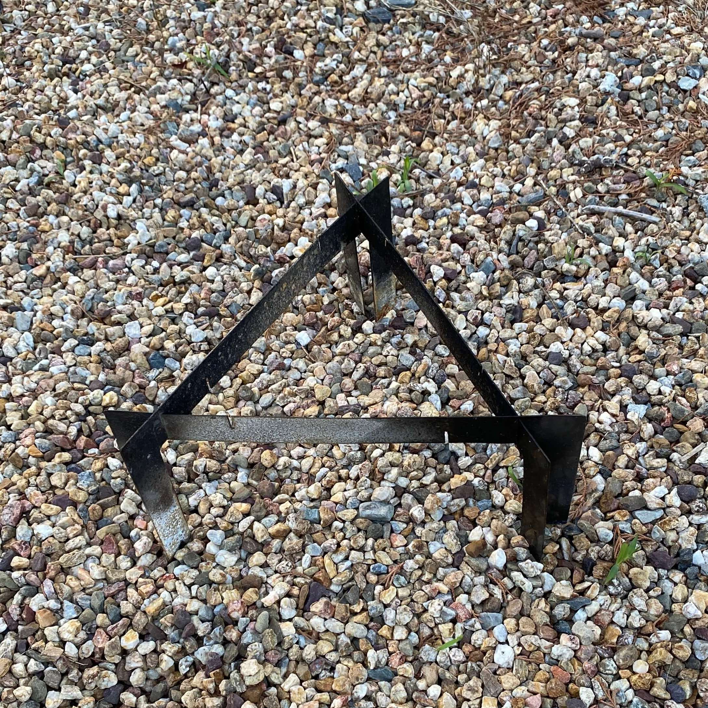 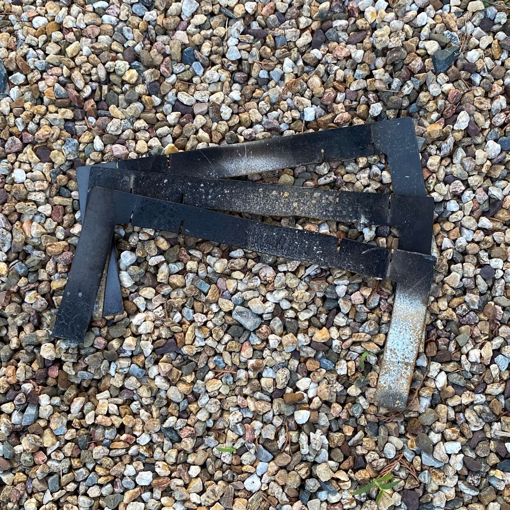Aquí una imagen de como lo usé el primer día, aunque realmente lo imaginé sujetando una sola sartén ese día cociné una tortilla de patata así que le puse una parrilla encima y soportó dos sartenes a la vez.
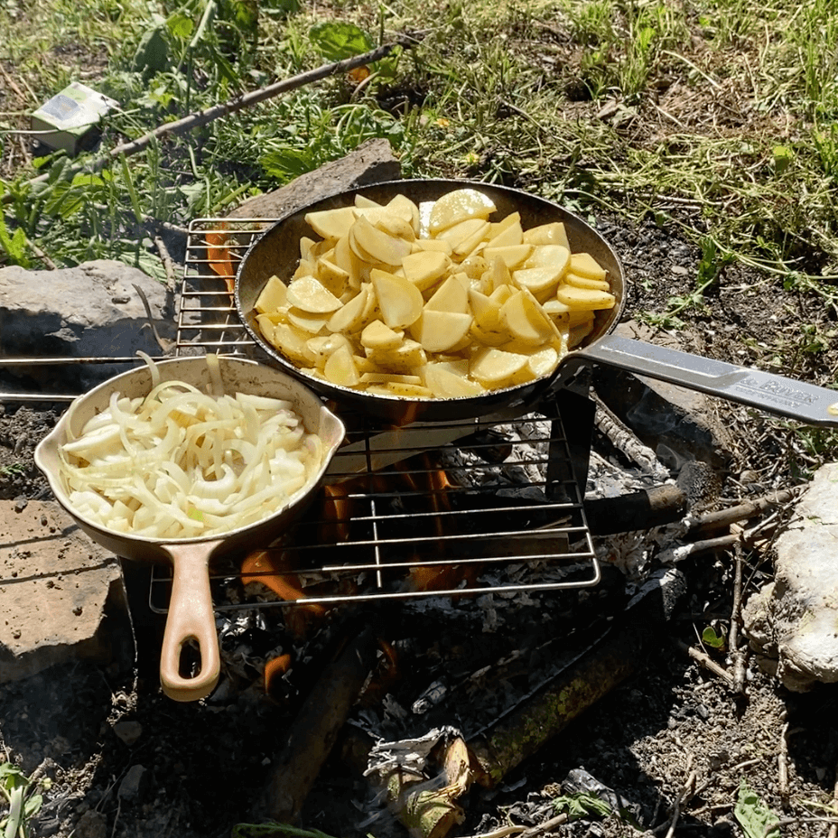12/07/2024
El 30/05/24 escribí sobre una mesa colgante que había hecho para Emily y que daba por fracasada. Finalmente le construí una mesa a Emily, ha tenido que esperar pacientemente casi dos meses. Esta misma semana en mi supermercado de confianza vi que iban a tirar una estantería llena de perfiles de hierro de 2x2 cm, pregunté si me la podía llevar y me dijeron que sí, así que la montamos en la baca del coche y a casa. Mi plan principal es utilizar todo este hierro para construir la base de un roof tent, proyecto que supongo que si llevo a cabo enseñaré en el futuro.
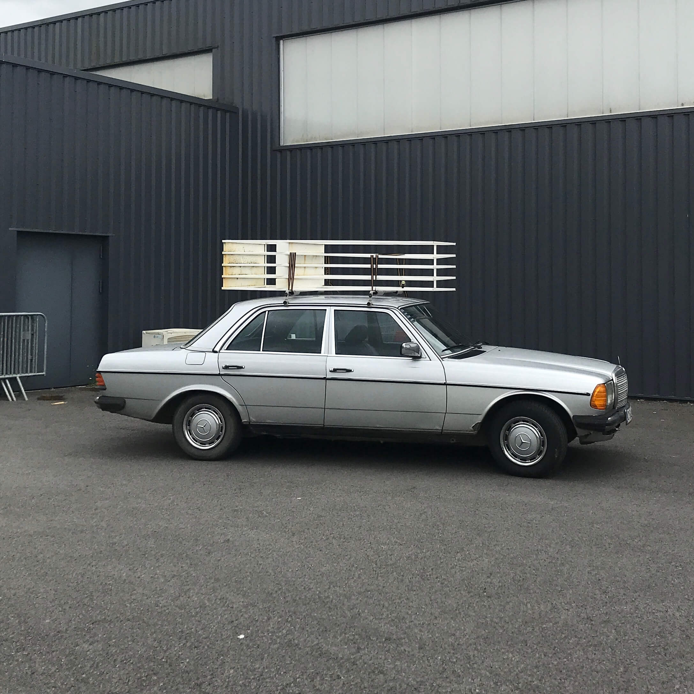Respecto a la mesa, mi primera idea fue soldar la base y las patas pero luego pensé que sería bastante tediosa para transportar cuando nos volvamos a mudar así que me decanté por no soldar nada y unir los perfiles dos a dos. Este es el principio del método de construcción "Grid Beam" por cierto.
Lo primero que hice fue cortar los perfiles necesarios de la estantería, después los corté a la medida necesaria y seguido taladré agujeros pasantes en ambos extremos en todas las piezas (excepto en las patas). El primer agujero está a 1 cm de la arista y el segundo a 3 cm. Intenté ser todo lo preciso que pude (sin contar con un taladro de banco) en este paso para que a la hora de montar todo fuese lo más smooth posible. Solo una pata dió un poco de guerra en el montaje, en el resto todas las varillas entraron bien por si solas o con un poco de cariño del martillo.
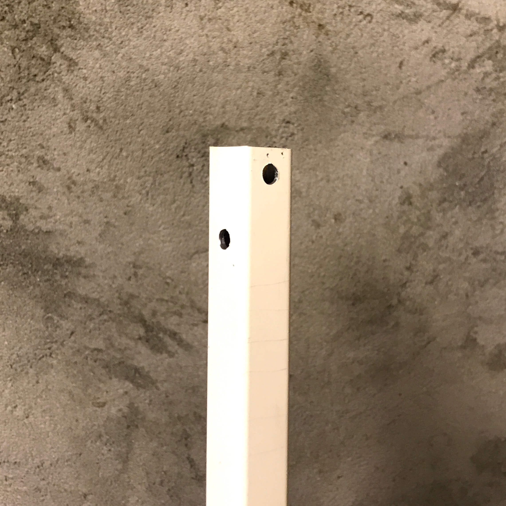 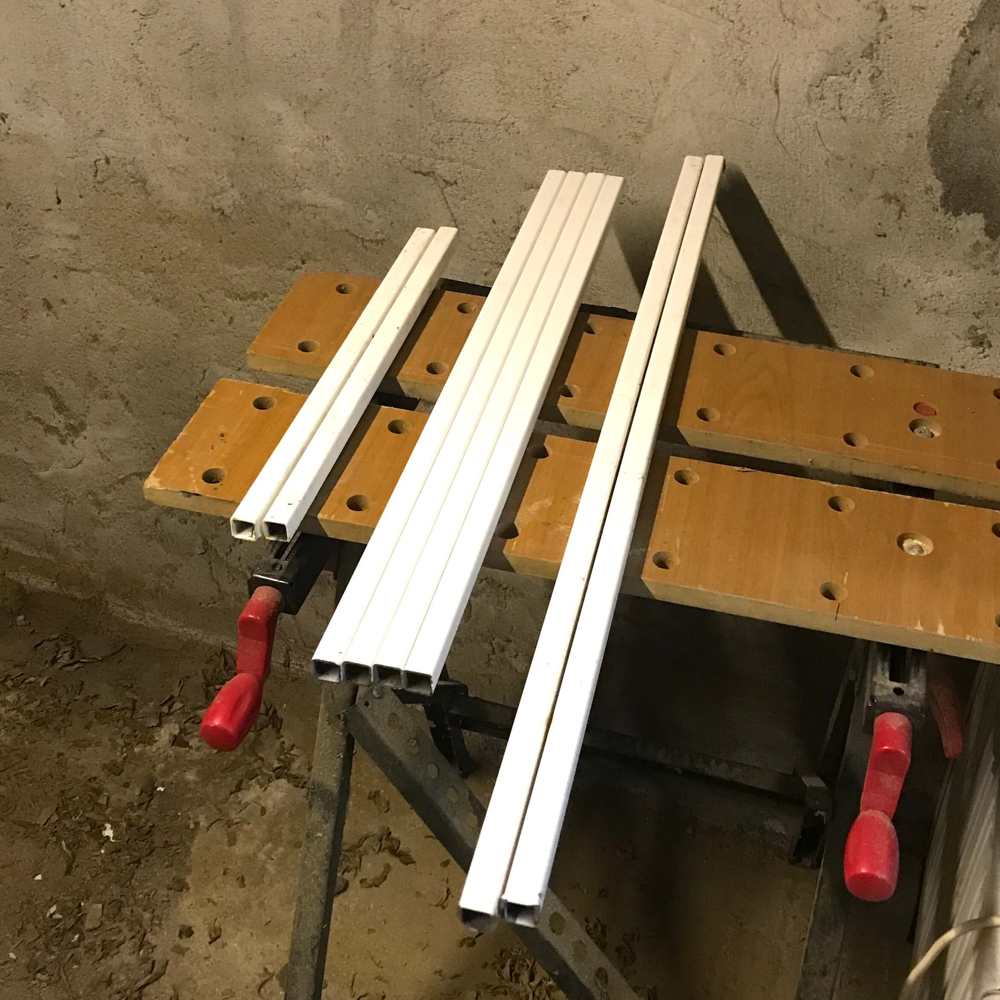Me decanté por este color rojo que en mi opinión iba a quedar genial con la madera. Creo que no me equivocaba.
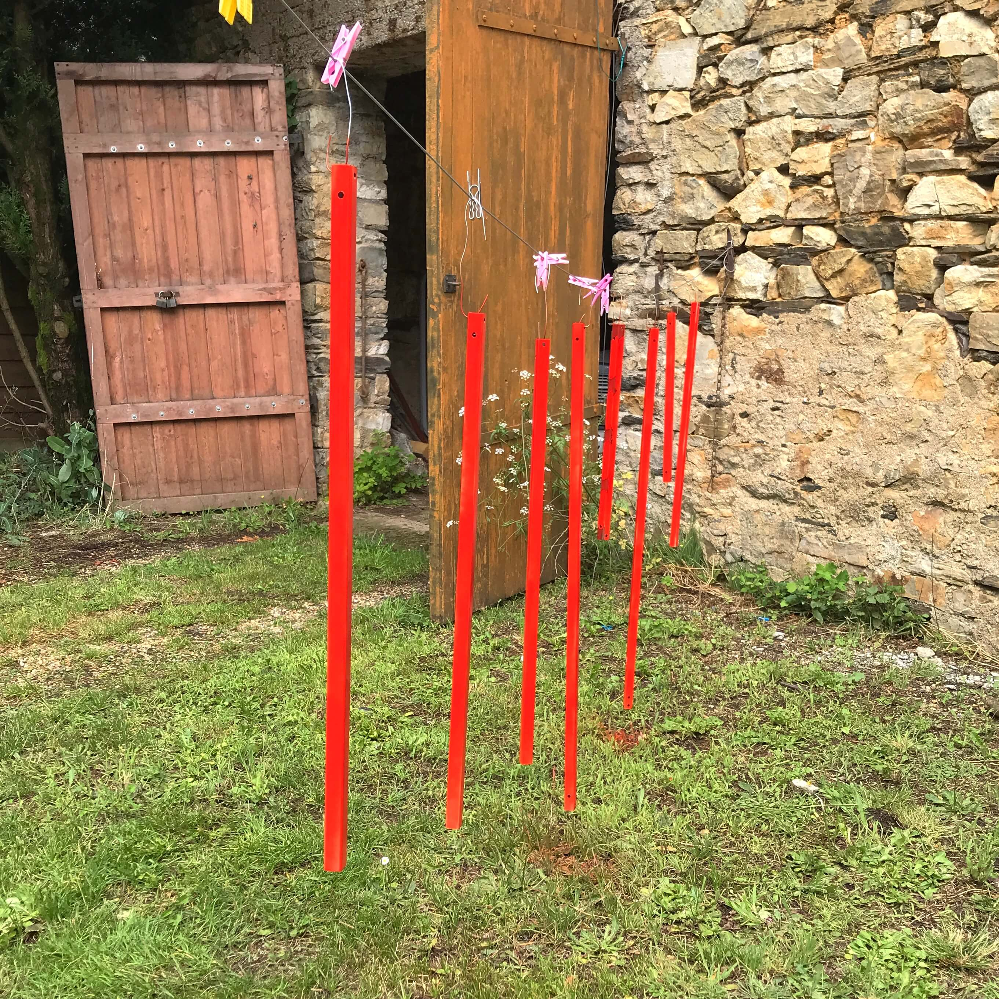I'm happy, Emily's happy y ahora tengo todo un despiece de estantería con el que algo debo de hacer.
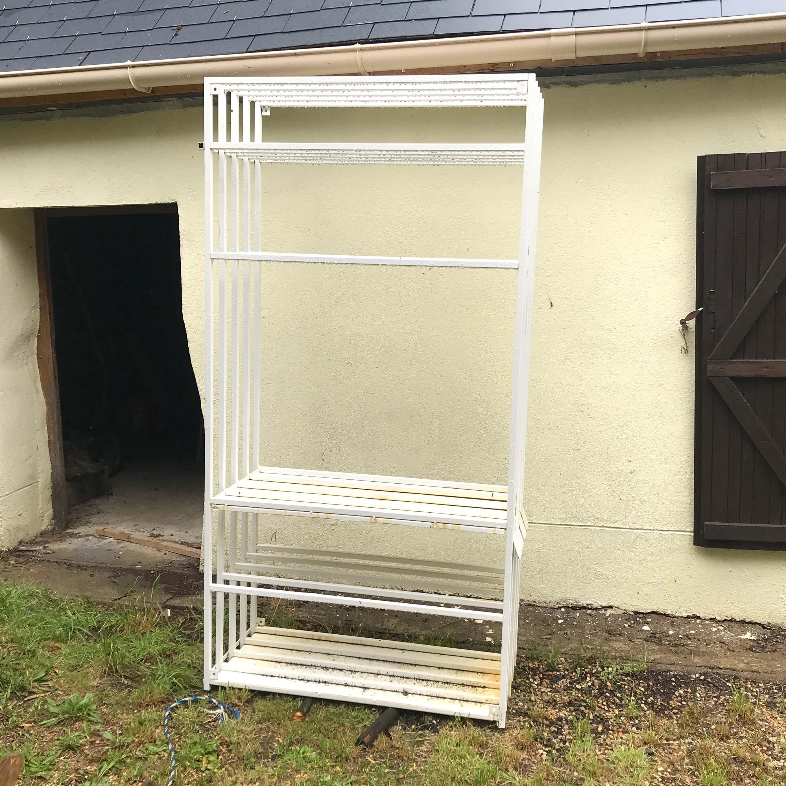31/05/2024
Estaba cansado de una estantería que hice el verano pasado y decidí transformarla en algo nuevo. Reutilicé las madera de las baldas y alguno de los listones (más algunos que ya tenía en el taller) para hacer esta pequeña estantería.

El afectado:

30/05/2024
Emily me pidió una mesa, a mi las mesas me parece que ocupan mucho espacio, sobre todo en los sitios donde no quiero tener una aka nuestra habitación. Pero Emily quiere una mesa, y una que esté en nuestra habitación, así que pensé en cómo podía hacer para satisfacer nuestros deseos al mismo tiempo. Me planteé hacer una mesa colgante. La idea inicial (colgarla sin sujección inferior) no era muy útil para trabajar ya que más que una mesa era un columpio. Decidí anclarla al suelo y eso limitó mucho el movimiento pero no mejora la fatiga que provoca el movimiento (aunque leve) de la mesa al escribir. Doy el proyecto por fracasado y Emily continua sin mesa hasta que se me vuelva a ocurrir una idea que nos satisfaga a los dos.
En esta foto las cuerdas inferiores todavía no están tensas:
Em testing it out:
22/05/2024
Encontré la hoja de una guadaña en el granero un día que estaba curioseando. La llevé al taller y lo archivé mentalmente en la carpeta de "cosas que podría hacer: un mango para la guadaña". La tarde siguiente ya estaba haciendo el mango. El primero que hice no me gustó así que hice uno nuevo con ramas de pino que tenía de la poda de este invierno. Por pura casualidad esa misma semana encontré un yunque para picar (acto de estirar y aplanar el filo) la guadaña en un rastro y lo compré. Gracias a ello pude reparar el filo, que estaba en muy mal estado. Soldé la hoja para juntar dos partes que estaban separadas y como arreglar el filo picando me fue imposible (en el estado que estaba) decidí cortar todos los podridos con la radial y empezar desde cero con metal en buen estado. El resultado es que estoy enamorado de la guadaña, y del acto de segar, y gratamente sorprendido de que yo mismo haya sido capaz de restaurar una herramienta y recuperar su funcionalidad.


12/05/2024
¿Recuerdas el marco del filtro del aire que utilicé para hacer los colgadores? Pues sigue dando de sí, esta vez lo he utilizado para hacer un par de escuadras para una estantería de pared. Sé que no son lo más robusto del mundo pero hacen la función para una carga ligera, y en mi opinión, son muy bonitas. En vez de intentar hacer dos piezas iguales lo que hice fue hacer una (asegurándome de que ambos lados fuesen iguales) y después cortarla.


10/05/2024
Una pequeña estantería esquinera hecha a partir de una puerta de escalera (las que se suelen utilizar para los niños) y restos de MDF que tenía en el taller. Elegí los barrotes más finos. Los soportes de las baldas son tres triángulos rectángulos de 20 cm de lado.


12/05/2024
Cojín para exterior (e interior) con base impermeable. Mi intención es poder usarlo en el jardín. Mide 70x70 cm, está hecho con la misma tela que el bolso de un poco más abajo (loneta de algodón de 700gsm) y con tela de polipropileno en la parte inferior, encontrada en un rastro. Cierre por botones y solapa. Personalizado con un vinilo de vigas.works.


10/05/2024
Idea para jabonera de pared ajustable al recipiente.

8/04/2024
El 2/02/2024 (un poquito más abajo) escribí sobre unas cartas que había enviado a amigos. En las cartas incluí unos vinilos textiles que había hecho junto a un mensaje explicando como usarlos. Tras unas semanas de espera por fin he recibido varias de las personalizaciones patrocinadas por vigas que los destinatarios han creado.
Los vinilos en cuestión hacen referencia a las etiquetas de precio. Quería coger un elemento que es temporal (todos quitamos las etiquetas de precio) y hacerlo permanente, en este caso, sobre superficies textiles.
Así los envíe en las cartas
El primero que yo pegué sobre una camiseta

Enrique fue la primera persona que compartió su creación, pegó uno de los vinilos sobre una camiseta blanca. Me encantó la posición que eligió.

Ángela decidió utilizar el bolsillo trasero de unos vaqueros como su lienzo. Me encanta!

Harry hizo dos cosas que no me esperaba. Uno de sus vinilos lo puso en un saco que yo mismo serigrafié en 2021 y que él recibió por comprar una prenda de Tradingberry. Vigas ni siquiera existía en mi cabeza por aquella época.

La segunda cosa que hizo fue pegar el vinilo en el cuello de una camisa. Brutal.

29/03/2024
Usamos mucha cinta adhesiva a la hora de empaquetar pedidos de Dimanche y ya estaba cansado de cortarlo con las tijeras así que decidí hacernos un dispensador de cinta.
Está hecho con chapa de acero galvanizado de 0'5 mm. Acepta rollos de hasta 25 mm de ancho, generalmente es lo máximo que usamos así que es perfecto para nosotros.
La cuchilla está hecha con la misma chapa, cortando en diagonal para hacer una especie de sierra dentada, funciona a las mil maravillas.
Tiene un hueco para meter el dedo y coger la cinta y tras terminarlo me di cuenta de que necesitaba algo para sujetar los rollos y que no se moviesen a la hora de tirar de la cinta, de ahí la pequeña pieza que hay entre el rollo y la cuchilla. Es de quita y pon, y va a presión. Cuando quieras cambiar el rollo lo levantas y lo vuelves a poner. Simple. Pensé en soluciones más complicadas pero esta funciona perfectamente. Está hecho con un trozo de chapa que me sobró, y era provisional, pero me parece que se va a quedar así...


12/03/2024
Bolso en loneta de 700gsm. Tiene dos tipos de asas, corta y larga dispuestas de una forma ingeniosa y que cuando solo usas unas, las otras forman parte de la imagen del bolso. En el interior hay un bolsillo y un hook para colgar un mosquetón (siempre incorporo esto a los bolsos que coso). El interior está forrado con loneta también, aunque esta es más ligera y de color morado. Cuando lo terminé y lo probé lo que salió de mi boca fue: "esto no casca ni a la de 100" así que supongo que conseguí mi objetivo de hacer un bolso casi indestructible.


2/02/2024
Cartas que he enviado a amigos para formar parte de un proyecto colaborativo en el que estoy trabajando con vigas.
Si quieres formar parte escríbeme.
Más detalles en la carta y cuando tenga el input de los primeros colaboradores.

1/02/2024
He hecho dos estanterías para mi baño a partir de una señal vieja.
La señal era de acero galvanizado, usé la parte superior como balda y el palo como anclaje. La balda está remachada a la sujección.
Con restos del palo hice dos escuadras que he usado para hacer un toallero, pero como no lo he puesto todavía no tengo fotos.
Creo que en el futuro haré una versión de estas baldas en aluminio o inox y estará disponible en la tienda.
Por cierto la parte inferior de las baldas está pintada de azul klein.


16/02/2024
El proceso de crear una malla-bolso, mi intención es que la misma malla sirva para ser usada estirada (por ejemplo en la baca del coche sujetando algo) y que luego puedas cerrarla y usarla como bolso.
Me queda por mejorar la forma de terminarla, los nudos inferiores y pensar algo sobre las asas, que sirvan como puntos de anclaje (malla estirada) y como asas (malla bolso). También he pensado en usar cuerda elástica en los laterales.
Uso cuerda paracord, y aunque parezca mentira, en la malla de abajo hay 15 metros de cuerda.
He hecho dos versiones, una pequeña (la que tiene la botella) y otra más grande.

31/01/2024
Micah Lexier publicó hace unas semanas en IG que el que quisiera podía formar parte de una nueva exposición en la que estaba trabajando. Le escribí para saber más y me dijo que para participar había que enviar una postal a la dirección que te indicaba con el mensaje que él te decía.
Me hace mucha ilusión participar en uno de sus proyectos así que lo hice sin dudarlo. Me encanta él como artista y como persona, así que I'm really honored to take part in this.
Para participar utilicé una postal de un libro de postales antiguas que encontré en un rastro en Francia. Pese a que solo el reverso va a estar expuesto, decidí poner una pequeña firma en el anverso para la posteridad.
28/01/2024
Emily quería una lámpara champiñón, compramos esta tulipa en un rastro por 0'3€ y le hice una pequeña base con dos listones (idea de Emily). El casquillo y el cable son reutilizados de otra lámpara vieja.
25/01/2024
Este ya era el último pedacito de chapa que me quedaba, hice un tube squeezer porque sinceramente tenía muchas ganas de tener uno así, aunque el Roblón también sirve para ello, pero bueno, que quería hacer uno. Esta es la segunda versión, apurando ya el último cachito. Funciona de maravilla y auqnue la forma no es la que tenía en mente, no tenía chapa de sobra. Me asombra un montón cómo un simple pliegue puede convertir una chapa endeble en algo tan rígido.

Esta fue la primera versión, que pese a que la forma me gusta mucho más no caí en que al usarlo enseguida se rompería por la torsión.

Cuchillo para mantequilla, este objeto sí estará a la venta dentro de poco. Hecho con roble de mi jardín (como el Roblón).

2023
Armario a base de listones para la habitación. No había ningún sitio para nuestra ropa así que hicimos uno al mudarnos.

Actualmente está cubierto por todos los lados con cortinas de loneta de algodón ya que nos cansamos de que ver nuestra ropa todo el rato, en futuras casas nos gustaría no tener la ropa en el dormitorio.
Este perchero lo hice a partir de una llave de las que vienen con las instrucciones de montaje de muebles. Picture la etiqueta en el tote "vigas", quizás una de las primeras cosas al que le puse ese nombre.
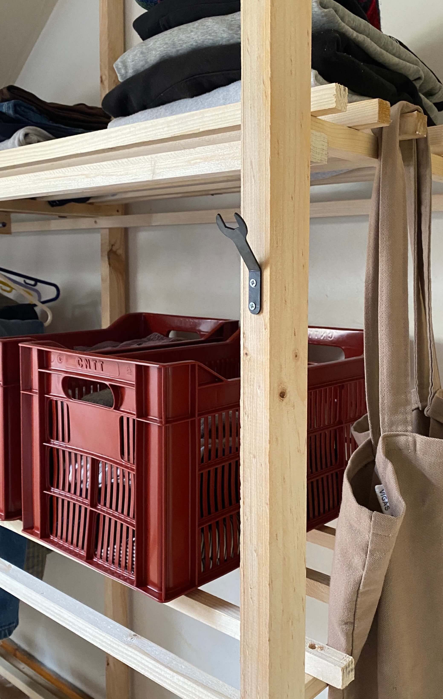 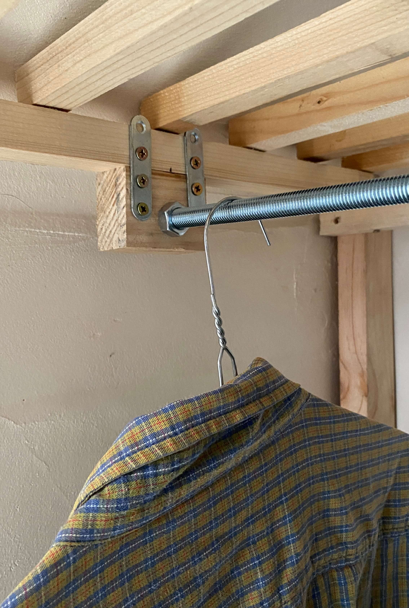Em making sure everything is how it should be.
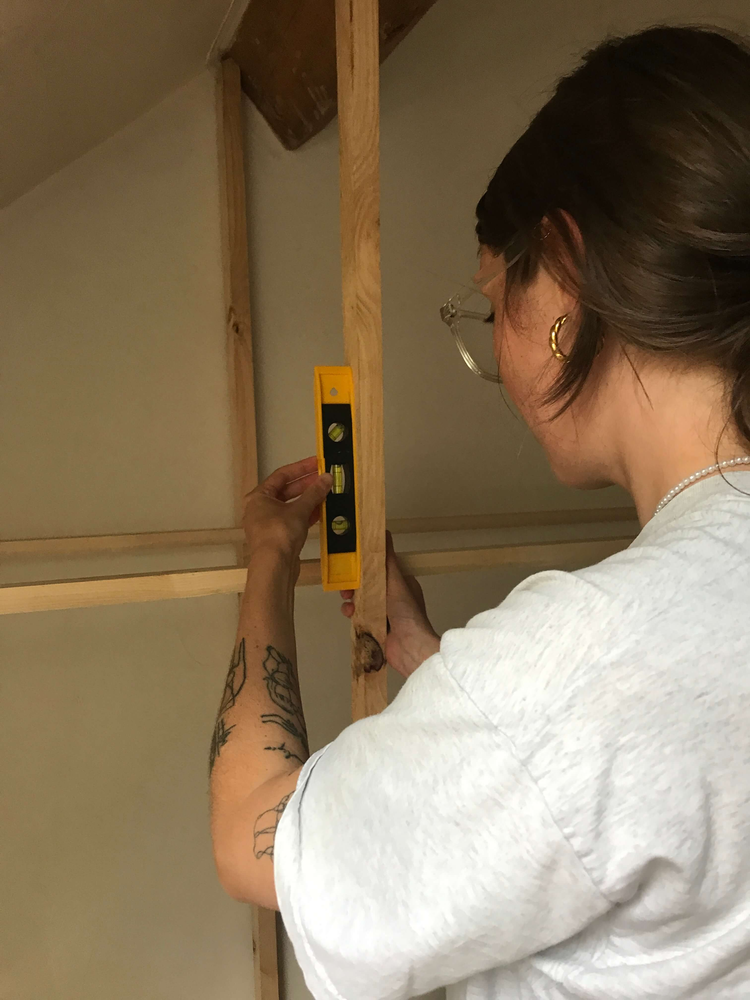
Nuestra furgoneta.
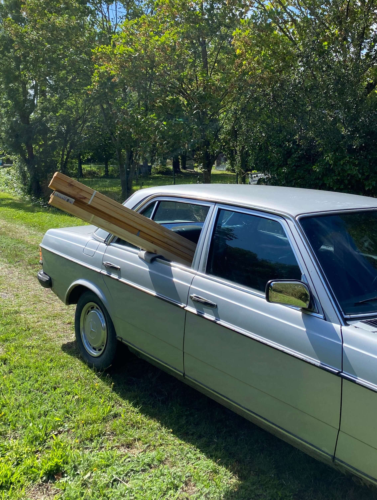Estantería con varilla roscada, surgió a partir de querer extender el concepto del Mesibanc (varilla roscada como base) a otros objetos.

Este candelabro surgió de la misma manera, a partir del Mesibanc.

Camiseta de manga larga que serigrafié a dos colores
Encontré unas diez chapas que creo sirvieron para el alero de un tejado, las lijé a lo basto con la amoladora y con ellas hice una variedad de cosas. Una caja grande y dos pequeñas, una tulipa para una lámpara y un candelabro.
El candelabro
La lámpara

Una de las cajitas pequeñas
Stickers en ordenadores ajenos
Banco a partir de vigas viejas del antiguo tejado

2022
Librería de cobre y pino.
Esta librería es modular, no tiene ningún tipo de tornillo ni fijación y es fácilmente transportable. Esta hecha con rectángulos de pino y tubería de cobre de 14 mm.
Si te fijas en la imagen, en la parte superior de cada tabla de madera hay dos agujeros, la idea es que para crecer en altura dupliques el sistema y lo coloques encima del nivel inferior, sujetado con dos espigas de madera.
Usé un segundo nivel pero no tengo foto de eso lamentablemente.

Piedra porta inciensos
Anillo a partir de un racor de latón de fontanería

Sublimé esta taza con una pistola de calor, y tengo diez más. Quizás en algún momento haga algo con ellas.

2021
Conjunto en contrachapado. Funny enough después de hacer la silla vi que Zara home había hecho una muy similar, did that mean anything?

Prototipo de silla. Recuerdo que bajé Paseo de Gracia desde Servei Estació con dos listones en el hombro de 2'5 metros cada uno hasta casa. Y luego rehice el camino, para devolver el que me sobró.

Banco a partir de madera encontrada en la calle
Lámpara de metacrilato y tablerillo. Hice esta lámpara con la intención de usarla como cartel luminoso más que para iluminar. Quería ponerle un vinilo en el metacrilato, uno de vigas concretamente, pero finalmente no lo hice y me alegro.

Encontré este armazón de silla una tarde al lado de un contenedor. Alguien debió dejarlo allí. Yo ví que podía hacer algo con él y lo cogí. Le quité todo el óxido y como no tenía ni idea de su configuración original, para rehacerlo utilicé las dimensiones de asiento y respaldo que me parecieron. Fue mi primera vez tapizando un mueble.

2020
Este mueble tiene un sitio especial en mí. Me lo pidió Emily, para poner libros y cositas. Por aquel entonces solo tenía una sierra de calar prestada por mi suegro y un destornillador de estrella. Corté la madera en la cocina, te puedes imaginar el burbujón a serrín. Y para atornillarlo una aventura, sin taladro y haciendo los agujeros a la fuerza con el tornillo y el destornillador. Obviamente las uniones son con escuadras, no había otra manera por aquel entonces. Cuatro años más tarde y cuatro mudanzas más tarde, still standing!